AKG ×andund G2 Every asset delivered. Every audience target beaten.Jedes Asset geliefert. Jedes Reichweitenziel übertroffen.
- PeriodZeitraum
- 04.05.–28.06.2026 · 8 weeks8 Wochen
- Budget (hypothetical)Budget (hypothetisch)
- €150,000150.000 €
- My roleMeine Rolle
- Junior Partnerships Manager
- 8.4M8,4 Mio.impressionsImpressionen
- ≈5×seen per personpro Person gesehen
- 1.7M1,7 Mio.different peopleverschiedene Personen
- 4.9%4,9 %interactions per impressionInteraktionen pro Impression
- 412K412 Tsd.likes, comments, sharesLikes, Kommentare, Shares
- 5.1%5,1 %clicks per person reachedKlicks pro erreichter Person
- 86K86 Tsd.clicks to AKGKlicks zu AKG
Audience · result vs. targetPublikum · Ergebnis vs. Ziel
resultErgebnistarget (same spot on every bar)Ziel (bei jedem Balken an derselben Stelle)
- Different people reachedErreichte Personen1.7M1,7 Mio.targetZiel 1.5M1,5 Mio. · 13% above13 % darüber
- Impressions with a like, comment or shareImpressionen mit Like, Kommentar oder Share4.9%4,9 %targetZiel 4.0%4,0 % · 0.9 pts above0,9 Pkt. darüber
- Videos watched to the endVideos bis zum Ende gesehen62%62 %targetZiel 60%60 % · 2 pts above2 Pkt. darüber
- Clicks to AKG per person reachedKlicks zu AKG pro erreichter Person5.1%5,1 %targetZiel 5.0%5,0 % · 0.1 pts above0,1 Pkt. darüber
Delivery · result vs. targetLieferung · Ergebnis vs. Ziel
resultErgebnistarget (same spot on every bar)Ziel (bei jedem Balken an derselben Stelle)
- Assets deliveredAssets geliefert31/31targetZiel 31 · on target · 0 missedim Ziel · 0 verpasst
- Live on the planned dayAm Plantag live94%94 %targetZiel 100%100 % · 6 pts below · 2 late, 1 agreed with AKG6 Pkt. darunter · 2 später, 1 vereinbart
- Content AKG accepted without changesVon AKG ohne Änderungen angenommen89%89 %targetZiel 85%85 % · 4 pts above4 Pkt. darüber
- Agreed to-dos closedVereinbarte Aufgaben erledigt96%96 %targetZiel 95%95 % · 118 of 123 · 118 von 123 · 1 pt above1 Pkt. darüber
What €150,000 boughtWas 150.000 € gekauft haben
- €0.090,09 €per person reachedpro erreichter Person
- €0.360,36 €per interactionpro Interaktion
- €1.741,74 €per click to AKGpro Klick zu AKG
- €0.0780,078 €per video watched to the endpro komplett gesehenem Video
Fictional case study for a job application. All figures are hypothetical and simulated; they are not real G2 Esports or AKG data. Not affiliated with or endorsed by G2 Esports or AKG. Concept and design © 2026 Christian Balan, all rights reserved.Fiktive Fallstudie für eine Bewerbung. Alle Zahlen sind hypothetisch und simuliert, keine echten Daten von G2 Esports oder AKG. Nicht verbunden mit oder unterstützt von G2 Esports oder AKG. Konzept und Design © 2026 Christian Balan, alle Rechte vorbehalten.
Creator-led video won. Switching to it in week 6 paid offCreator-Video hat gewonnen. Der Wechsel in Woche 6 hat sich gelohnt.
×2.6×2,6
interactions per post: creator-led video vs. static postInteraktionen pro Post: Creator-Video vs. statischer Post
- Static postStatischer Post×1.00×1,00
- Creator-led video postCreator-Video-Post×2.59×2,59
Likely range ×2.3 to ×2.9 (95%). Same reach, paid support and post age.Wahrscheinlicher Bereich ×2,3 bis ×2,9 (95 %). Gleiche Reichweite, Paid Support und Post-Alter.
+38%+38 %
interactions in weeks 7–8 above the forecast for the old planInteraktionen in Wochen 7–8 über der Prognose für den alten Plan
- Forecast · old planPrognose · alter Plan94K94 Tsd.
- Actual · new planIst · neuer Plan129K129 Tsd.
Interactions, weeks 7–8. Clicks Interaktionen, Wochen 7–8. Klicks +41%+41 % · people reached Reichweite +22%+22 % · videos finished Videos zu Ende 55%55 % → 70%70 %
±3%±3 %
forecast error when tested on week 6, before we relied on itPrognosefehler beim Test an Woche 6, bevor wir uns darauf verlassen haben
- InteractionsInteraktionen52,86752.867 → 54,63754.637+3.3%+3,3 %
- ClicksKlicks10,04010.040 → 10,32810.328+2.9%+2,9 %
- People reachedReichweite224,453224.453 → 222,955222.955−0.7%−0,7 %
Week 6: forecast made in week 5 → what actually happened.Woche 6: Prognose aus Woche 5 → tatsächliches Ergebnis.
For the renewal · your callFür die Verlängerung · deine Entscheidung
- Make creator-led video the core formatCreator-Video zum Kernformat machen+44K interactions on the 6 static slots (36K–52K)+44 Tsd. Interaktionen auf den 6 statischen Slots (36 Tsd.–52 Tsd.)
- Build a control group into the renewalKontrollgruppe in die Verlängerung einbauenturns a strong signal into proofmacht aus einem starken Signal einen Beweis
- Agree brand-lift and retailer tracking before launchBrand Lift und Händler-Tracking vor dem Start vereinbarentoday: 18K site actions, no sales dataheute: 18 Tsd. Website-Aktionen, keine Verkaufsdaten
Fictional case study: all figures are hypothetical and simulated. Model results show strong signals, not proof of cause.Fiktive Fallstudie: Alle Zahlen sind hypothetisch und simuliert. Die Modellergebnisse sind starke Signale, kein Kausalitätsbeweis.
What I managed, week by weekWas ich gesteuert habe, Woche für Woche.
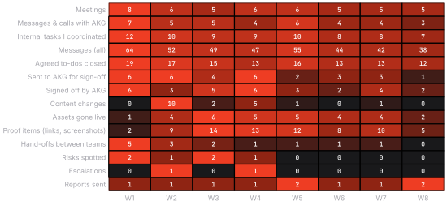
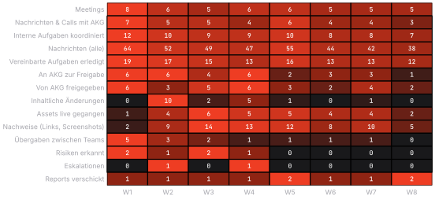
| WeekWoche | Main objectiveHauptziel | Tasks handledAufgaben | Stakeholder | Deliverables | AKG sign-offsAKG-Freigaben | New risksNeue Risiken | ProblemsProbleme | Actions takenMaßnahmen | OutcomeErgebnis | Key numberKennzahl |
|---|---|---|---|---|---|---|---|---|---|---|
| W104.05. | Kick-off, briefs and production planKick-off, Briefings und Produktionsplan | 19 tasks · 19 Aufgaben · Kick-off with AKG, 4 creative briefs, RACI and timeline, deliverable tracker set up, creator availability checkKick-off mit AKG, 4 Creative-Briefings, RACI und Zeitplan, Deliverable-Tracker aufgesetzt, Verfügbarkeit der Creator geprüft | AKG Brand & Marketing, Partnerships Director, Head of Content, Creator Manager, Legal | NL-01 | 6 sent · 6 signed off6 geschickt · 6 freigegeben | R3, R4 | Product samples not shipped yet; giveaway T&Cs need both legal teamsProduktmuster noch nicht versendet; Gewinnspiel-AGB brauchen beide Rechtsabteilungen | Chased shipment with the AKG product specialist; started the T&Cs two weeks early; agreed the weekly report formatVersand beim AKG-Produktspezialisten nachverfolgt; AGB zwei Wochen früher gestartet; Format des Wochenreports abgestimmt | Briefs approved, first newsletter liveBriefings freigegeben, erster Newsletter live | 1 of 1 live on the planned day1 von 1 am Plantag live |
| W211.05. | First wave liveErste Welle live | 15 tasks · 15 Aufgaben · Partnership reveal, first short-form, placement batch 1, hero video pre-production with the agencyPartnerschafts-Reveal, erstes Short-Form, Placement-Batch 1, Hero-Video-Vorproduktion mit der Agentur | Social, Video Producer, Broadcast, production agency, Creator A, Players A/BSocial, Video Producer, Broadcast, Produktionsagentur, Creator A, Spieler A/B | SP-01, SF-01, PP-01, PP-02 | 6 sent · 3 signed off6 geschickt · 3 freigegeben | R2 | Headphone shipment delayed, photo shoot at risk; Creator B travels to a tournament during the CV-02 slotKopfhörer-Lieferung verspätet, Fotoshooting gefährdet; Creator B reist im CV-02-Slot zu einem Turnier | Agreed a new photo date (19.05.) with AKG in writing; moved the CV-02 recording before the tripNeuen Fototermin (19.05.) schriftlich mit AKG vereinbart; CV-02-Aufnahme vor die Reise gelegt | 1 documented deadline shift, rest on plan1 dokumentierte Terminverschiebung, Rest im Plan | 4 of 4 live on the planned day · 4.1% of impressions interacted4 von 4 am Plantag live · 4,1 % der Impressionen interagierten |
| W318.05. | Creator content and first livestreamCreator-Content und erster Livestream | 14 tasks · 14 Aufgaben · Studio tour video, ranked-night livestream, photography delivered, hero video first cut submittedStudio-Tour-Video, Ranked-Livestream, Fotopaket geliefert, erster Schnitt des Hero-Videos eingereicht | Creator A/B, Broadcast Producer, photo studio, AKG Brand Manager, AKG Marketing ManagerCreator A/B, Broadcast Producer, Fotostudio, AKG Brand Manager, AKG Marketing Manager | PH-01, SP-02, CV-01, LS-01, PP-03, PP-04 | 4 sent · 5 signed off4 geschickt · 5 freigegeben | R1, R5 | Hero video feedback overdue (SLA 3 days); match weekend clashes with two social slotsFeedback zum Hero-Video überfällig (SLA 3 Tage); Matchwochenende kollidiert mit zwei Social-Slots | Reminder on day 3, escalation to the AKG Marketing Manager on day 4 with a timestamped review link; re-sequenced the social calendarErinnerung an Tag 3, Eskalation an den AKG Marketing Manager an Tag 4 mit Review-Link und Zeitmarken; Social-Kalender umgeplant | Feedback received on day 6; calendar clash closedFeedback an Tag 6 erhalten; Kalenderkonflikt gelöst | 5 of 6 live on the planned day · 4.2% of impressions interacted5 von 6 am Plantag live · 4,2 % der Impressionen interagierten |
| W425.05. | Hero launch and giveawayHero-Launch und Gewinnspiel | 13 tasks · 13 Aufgaben · Hero video launch after 3 rounds, giveaway launch after a joint legal call, match-day socialHero-Video-Launch nach 3 Runden, Gewinnspiel-Start nach gemeinsamem Legal-Call, Matchday-Social | Video Producer, agency, G2 Legal, AKG Legal & Compliance, Community ManagerVideo Producer, Agentur, G2 Legal, AKG Legal & Compliance, Community Manager | SP-03, HV-01, GA-01, SF-02, PP-05 | 6 sent · 6 signed off6 geschickt · 6 freigegeben | R6 | Product-claim wording on creator video #2; giveaway T&Cs sign-off stalled between legal teamsProduktclaims im Creator-Video #2; AGB-Freigabe hängt zwischen den Rechtsabteilungen | Consolidated all hero feedback in one tracker, capped rounds per contract; set up a joint legal callHero-Feedback in einem Tracker gebündelt, Runden laut Vertrag begrenzt; gemeinsamen Legal-Call aufgesetzt | Hero video and giveaway live on dateHero-Video und Gewinnspiel pünktlich live | 5 of 5 live on the planned day · 5.3% of impressions interacted5 von 5 am Plantag live · 5,3 % der Impressionen interagierten |
| W501.06. | Mid-campaign review and analysisZwischenbilanz und Analyse | 16 tasks · 16 Aufgaben · Mid-campaign report, format analysis of weeks 1–5, optimisation memo, creator video #2 final revisionsZwischenreport, Formatanalyse Wochen 1–5, Optimierungsmemo, finale Revisionen Creator-Video #2 | Partnerships Director, Head of Content, Social Media Manager, AKG Brand Manager | NL-02, SP-04, SF-03, CV-02, PP-06 | 2 sent · 3 signed off2 geschickt · 3 freigegeben | – | Creator video #2 two days after its plan date (still inside the contract window)Creator-Video #2 zwei Tage nach Plantermin (noch im Vertragsfenster) | Analysed asset-level data, fitted engagement and click models, proposed the reallocation to my manager first, then AKGDaten auf Asset-Ebene analysiert, Engagement- und Klickmodelle geschätzt, Umschichtung erst intern, dann AKG vorgeschlagen | Recommendation: shift weeks 7–8 to creator/videoEmpfehlung: Wochen 7–8 auf Creator/Video umschichten | 4 of 5 live on the planned day · 5.4% of impressions interacted4 von 5 am Plantag live · 5,4 % der Impressionen interagierten |
| W608.06. | Sign-off and preparation of the reallocationFreigabe und Vorbereitung der Umschichtung | 12 tasks · 12 Aufgaben · AKG sign-off (09.06.), SP-07/08 turned into creator-led video posts, Creator D re-briefed, paid support moved; giveaway closed, winners drawnAKG-Freigabe (09.06.), SP-07/08 als Creator-Video-Posts umgesetzt, Creator D neu gebrieft, Paid Support verschoben; Gewinnspiel beendet, Gewinner gezogen | AKG Brand Manager, Social Media Manager, Creator Manager, Creator D, Community Manager | SP-05, PP-07, SP-06, PP-08 | 3 sent · 2 signed off3 geschickt · 2 freigegeben | – | The format change needed written AKG approval and a new brief within 5 daysDer Formatwechsel brauchte eine schriftliche AKG-Freigabe und ein neues Briefing binnen 5 Tagen | Change note with the numbers behind it; revised brief to Creator D within 24 hoursChange Note mit den Zahlen dahinter; überarbeitetes Briefing an Creator D binnen 24 Stunden | Plan updated at no extra cost; week 6 within 3% of the forecastPlan ohne Mehrkosten angepasst; Woche 6 innerhalb von 3 % der Prognose | 4 of 4 live on the planned day · 4.7% of impressions interacted4 von 4 am Plantag live · 4,7 % der Impressionen interagierten |
| W715.06. | Video-first final pushVideo-first-Schlussphase | 12 tasks · 12 Aufgaben · Community cup livestream, short-form #4, creator-led post #7, final placementCommunity-Cup-Livestream, Short-Form #4, Creator-Post #7, letztes Placement | Creator C/D, Broadcast Producer, Social Media Manager, AKG Brand Manager | SF-04, LS-02, SP-07, PP-09 | 3 sent · 4 signed off3 geschickt · 4 freigegeben | – | Livestream VOD analytics delayed by the platformVOD-Analytics des Livestreams von der Plattform verzögert | Collected interim screenshots as evidence and re-pulled the export on 24.06.Zwischenzeitlich Screenshots als Nachweis gesichert, Export am 24.06. neu gezogen | Engagement well above the week-5 forecastEngagement deutlich über der Prognose aus Woche 5 | 4 of 4 live on the planned day · 4.6% of impressions interacted4 von 4 am Plantag live · 4,6 % der Impressionen interagierten |
| W822.06. | Final deliverables and closeoutLetzte Deliverables und Abschluss | 10 tasks · 10 Aufgaben · Creator video #3, wrap-up post, proof-of-delivery pack completed, closeout report, renewal pre-readCreator-Video #3, Wrap-up-Post, Proof-of-Delivery-Paket komplett, Abschlussreport, Pre-Read zur Verlängerung | Creator D, Player B, AKG Brand Manager, Partnerships Director, FinanceCreator D, Spieler B, AKG Brand Manager, Partnerships Director, Finance | CV-03, SP-08 | 1 sent · 2 signed off1 geschickt · 2 freigegeben | – | 5 action items still open at close (none contractual)5 Action Items bei Abschluss offen (keines vertraglich) | Handed open items over with owners and dates; proof of delivery countersigned by AKGOffene Punkte mit Verantwortlichen und Terminen übergeben; Proof of Delivery von AKG gegengezeichnet | 31/31 delivered, closeout sent31/31 geliefert, Abschlussreport versendet | 2 of 2 live on the planned day · 5.0% of impressions interacted2 von 2 am Plantag live · 5,0 % der Impressionen interagierten |
| GroupGruppe | PeoplePersonen | ContactsKontakte | Meetings | Reminders I sentErinnerungen von mir | EscalationsEskalationen | Average reply: me / themØ Antwort: ich / sie | To-dos closedAufgaben erledigt |
|---|---|---|---|---|---|---|---|
| AKG | 4 | 52 | 14 | 11 | 1 | 2.6 h / 19.5 h2,6 h / 19,5 h | 29/30 (97%)29/30 (97 %) |
| G2 internalG2 intern | 12 | 263 | 22 | 24 | 1 | 3.4 h / 6.2 h3,4 h / 6,2 h | 58/61 (95%)58/61 (95 %) |
| Creators & playersCreator & Spieler | 6 | 85 | 7 | 13 | 0 | 4.1 h / 14.8 h4,1 h / 14,8 h | 21/22 (95%)21/22 (95 %) |
| Agency & productionAgentur & Produktion | 3 | 37 | 3 | 5 | 0 | 3.0 h / 8.7 h3,0 h / 8,7 h | 10/10 (100%)10/10 (100 %) |
| TotalGesamt | 25 | 437 | 46 | 53 | 2 | 3.4 h / –3,4 h / – | 118/123 (96%)118/123 (96 %) |
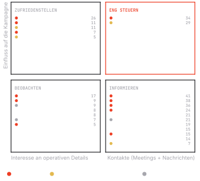
Reply times in working hours. Contacts = meetings + messages; for AKG that is 14 meetings + 38 messages and calls.Antwortzeiten in Arbeitsstunden. Kontakte = Meetings + Nachrichten; bei AKG 14 Meetings + 38 Nachrichten und Calls.
| Report | Key achievementWichtigster Erfolg | Key numbersKennzahlen | Problem | ActionMaßnahme | Next stepNächster Schritt |
|---|---|---|---|---|---|
| W108.05. | Kick-off done, 4 briefs submittedKick-off erledigt, 4 Briefings eingereicht | 6 sent for sign-off · 1 live6 zur Freigabe geschickt · 1 live | Product samples not shippedProduktmuster nicht versendet | Shipment tracking shared with AKG product teamSendungsverfolgung mit AKG-Produktteam geteilt | First wave live from 11.05.Erste Welle ab 11.05. live |
| W215.05. | Partnership reveal and first short-form livePartnerschafts-Reveal und erstes Short-Form live | 291K impressions · 4.1% interacted · 3,064 clicks to AKG291 Tsd. Impressionen · 4,1 % interagierten · 3.064 Klicks zu AKG | Photo shoot moved to 19.05. (shipment)Fotoshooting auf 19.05. verschoben (Lieferung) | New date confirmed in writing, no knock-on to other assetsNeuer Termin schriftlich bestätigt, keine Folgen für andere Assets | Hero video first cut for review 13.05.Erster Schnitt des Hero-Videos zur Freigabe am 13.05. |
| W322.05. | Studio tour video and first livestream liveStudio-Tour-Video und erster Livestream live | 952K impressions · 4.2% interacted · 9,063 clicks to AKG952 Tsd. Impressionen · 4,2 % interagierten · 9.063 Klicks zu AKG | Hero video feedback overdueFeedback zum Hero-Video überfällig | Asked for a 30-minute review call; escalated to Marketing Manager on day 430-minütigen Review-Call angefragt; an Tag 4 an Marketing Manager eskaliert | Hero launch 26.05., giveaway 27.05.Hero-Launch 26.05., Gewinnspiel 27.05. |
| W429.05. | Hero video and giveaway live on dateHero-Video und Gewinnspiel pünktlich live | 1.7M impressions · 5.3% interacted · 17K clicks to AKG1,7 Mio. Impressionen · 5,3 % interagierten · 17 Tsd. Klicks zu AKG | Product claims in creator video #2 need AKG legal wordingProduktclaims im Creator-Video #2 brauchen AKG-Legal-Formulierung | Claim sheet sent, creator re-records two linesClaim-Sheet geschickt, Creator nimmt zwei Sätze neu auf | Mid-campaign review 05.06.Zwischenbilanz am 05.06. |
| W505.06. | Mid-campaign review: creator/video outperforms staticZwischenbilanz: Creator/Video schlägt statische Formate | 1.5M impressions · 5.4% interacted · 18K clicks to AKG1,5 Mio. Impressionen · 5,4 % interagierten · 18 Tsd. Klicks zu AKG | Creator video #2 two days after plan dateCreator-Video #2 zwei Tage nach Plantermin | Proposed moving weeks 7–8 to creator/video formatsVorschlag: Wochen 7–8 auf Creator/Video-Formate umstellen | AKG decision by 09.06.AKG-Entscheidung bis 09.06. |
| W612.06. | Reallocation approved; giveaway closed with 18,400 entriesUmschichtung freigegeben; Gewinnspiel mit 18.400 Teilnahmen beendet | 1.2M impressions · 4.7% interacted · 10K clicks to AKG1,2 Mio. Impressionen · 4,7 % interagierten · 10 Tsd. Klicks zu AKG | Tight turnaround for the new creator briefKnapper Vorlauf für das neue Creator-Briefing | Revised brief sent within 24 hoursÜberarbeitetes Briefing binnen 24 Stunden verschickt | Video-first push from 15.06.Video-first-Phase ab 15.06. |
| W719.06. | Community cup livestream and creator-led post liveCommunity-Cup-Livestream und Creator-Post live | 1.5M impressions · 4.6% interacted · 14K clicks to AKG1,5 Mio. Impressionen · 4,6 % interagierten · 14 Tsd. Klicks zu AKG | Livestream VOD analytics delayed by the platformVOD-Analytics des Livestreams von der Plattform verzögert | Interim screenshots shared, full export followsZwischen-Screenshots geteilt, voller Export folgt | Final assets 23.06. and 25.06.Letzte Assets am 23.06. und 25.06. |
| W826.06. | All 31 deliverables live and verifiedAlle 31 Deliverables live und verifiziert | 1.2M impressions · 5.0% interacted · 13K clicks to AKG1,2 Mio. Impressionen · 5,0 % interagierten · 13 Tsd. Klicks zu AKG | None open with AKGKeine offenen Punkte mit AKG | Proof-of-delivery pack countersignedProof-of-Delivery-Paket gegengezeichnet | Closeout meeting and renewal conversationAbschlussmeeting und Gespräch zur Verlängerung |
Sent every Friday to the AKG Brand Manager, copy to my line manager. Same structure every week so changes stand out.Jeden Freitag an den AKG Brand Manager, in Kopie an meinen Vorgesetzten. Jede Woche gleiche Struktur, damit Veränderungen auffallen.
Keeping 31 assets on track31 Assets auf Kurs halten.
| Deliverable | Workstream | Owner at G2Owner bei G2 | ContactAnsprechpartner | Planned dayPlantag | Status | AKG sign-offAKG-Freigabe | Changes (ours + AKG)Änderungen (G2 + AKG) | RiskRisiko | Went liveLive seit | Proof it went liveNachweis | Performance |
|---|---|---|---|---|---|---|---|---|---|---|---|
| NL-01 Newsletter #1 · campaign teaserNewsletter #1 · Kampagnen-Teaser | CRM | CRM Manager | AKG Brand Manager | 08.05. | Live on timePünktlich live | Signed off as sentOhne Änderung freigegeben | 0 | LowNiedrig | 08.05. | ✓ 2 proofs✓ 2 Nachweise | 1,140 clicks · 4.4% of opens clicked1.140 Klicks · 4,4 % der Öffnungen klickten |
| SP-01 Social post #1 · partnership revealSocial Post #1 · Partnerschafts-Reveal | Social | Social Media Manager | AKG Brand Manager | 11.05. | Live on timePünktlich live | Signed off as sentOhne Änderung freigegeben | 0 | LowNiedrig | 11.05. | ✓ 2 proofs✓ 2 Nachweise | 133K impressions · 2.8% interacted133 Tsd. Impressionen · 2,8 % interagierten |
| SF-01 Short-form #1 · “Hear the footsteps”Short-Form #1 · „Hör die Schritte“ | Social videoSocial Video | Video Producer | Creator A | 14.05. | Live on timePünktlich live | Signed off as sentOhne Änderung freigegeben | 1 | MediumMittel | 14.05. | ✓ 3 proofs✓ 3 Nachweise | 215K views · 5.8% interacted215 Tsd. Views · 5,8 % interagierten |
| PP-01 Placement #1 · player cam, scrimsPlacement #1 · Spieler-Cam, Scrims | Brand placementBrand Placement | Broadcast Producer | Player A | 15.05. | Live on timePünktlich live | Signed off as sentOhne Änderung freigegeben | 0 | LowNiedrig | 15.05. | ✓ 2 proofs✓ 2 Nachweise | 94K impressions · 1.9% interacted94 Tsd. Impressionen · 1,9 % interagierten |
| PP-02 Placement #2 · team vlogPlacement #2 · Team-Vlog | Brand placementBrand Placement | Broadcast Producer | Player B | 15.05. | Live on timePünktlich live | Signed off as sentOhne Änderung freigegeben | 0 | LowNiedrig | 15.05. | ✓ 2 proofs✓ 2 Nachweise | 109K impressions · 1.8% interacted109 Tsd. Impressionen · 1,8 % interagierten |
| PH-01 Product photography packageProduktfoto-Paket | ProductionProduktion | Brand Designer | AKG Product Specialist | 13.05. | Live, 6 days lateLive, 6 Tage später | Signed off as sentOhne Änderung freigegeben | 1 | HighHoch | 19.05. | ✓ 2 proofs✓ 2 Nachweise | 409K impressions · 2.8% interacted409 Tsd. Impressionen · 2,8 % interagierten |
| SP-02 Social post #2 · product hero shotSocial Post #2 · Produkt-Hero-Shot | Social | Social Media Manager | AKG Brand Manager | 18.05. | Live on timePünktlich live | Signed off as sentOhne Änderung freigegeben | 1 | LowNiedrig | 18.05. | ✓ 2 proofs✓ 2 Nachweise | 156K impressions · 2.6% interacted156 Tsd. Impressionen · 2,6 % interagierten |
| CV-01 Creator video #1 · studio setup tourCreator-Video #1 · Studio-Setup-Tour | CreatorsCreator | Creator Manager | Creator A | 20.05. | Live on timePünktlich live | Signed off as sentOhne Änderung freigegeben | 2 | MediumMittel | 20.05. | ✓ 3 proofs✓ 3 Nachweise | 245K views · 5.6% interacted245 Tsd. Views · 5,6 % interagierten |
| LS-01 Livestream #1 · ranked nightLivestream #1 · Ranked-Abend | Broadcast | Broadcast Producer | Creator B | 21.05. | Live on timePünktlich live | Signed off as sentOhne Änderung freigegeben | 1 | MediumMittel | 21.05. | ✓ 3 proofs✓ 3 Nachweise | 93K views · 5.8% interacted93 Tsd. Views · 5,8 % interagierten |
| PP-03 Placement #3 · match-day broadcast deskPlacement #3 · Matchday-Broadcast-Desk | Brand placementBrand Placement | Broadcast Producer | Player A | 22.05. | Live on timePünktlich live | Signed off as sentOhne Änderung freigegeben | 0 | LowNiedrig | 22.05. | ✓ 2 proofs✓ 2 Nachweise | 122K impressions · 1.9% interacted122 Tsd. Impressionen · 1,9 % interagierten |
| PP-04 Placement #4 · bootcamp contentPlacement #4 · Bootcamp-Content | Brand placementBrand Placement | Broadcast Producer | Player B | 22.05. | Live on timePünktlich live | Signed off as sentOhne Änderung freigegeben | 0 | LowNiedrig | 22.05. | ✓ 2 proofs✓ 2 Nachweise | 150K impressions · 2.1% interacted150 Tsd. Impressionen · 2,1 % interagierten |
| SP-03 Social post #3 · match-daySocial Post #3 · Matchday | Social | Social Media Manager | AKG Brand Manager | 25.05. | Live on timePünktlich live | Signed off as sentOhne Änderung freigegeben | 0 | MediumMittel | 25.05. | ✓ 2 proofs✓ 2 Nachweise | 187K impressions · 2.3% interacted187 Tsd. Impressionen · 2,3 % interagierten |
| HV-01 Hero video · “Game Audio, Studio Quality”Hero-Video · „Game Audio, Studio Quality“ | ProductionProduktion | Video Producer | AKG Brand Manager | 26.05. | Live on timePünktlich live | Signed off after I escalatedNach meiner Eskalation freigegeben | 5 | HighHoch | 26.05. | ✓ 3 proofs✓ 3 Nachweise | 769K views · 4.7% interacted769 Tsd. Views · 4,7 % interagierten |
| GA-01 Giveaway · 5 AKG headsetsGewinnspiel · 5 AKG-Headsets | Community | Community Manager | AKG Legal & Compliance | 27.05. | Live on timePünktlich live | Signed off after I escalatedNach meiner Eskalation freigegeben | 1 | HighHoch | 27.05. | ✓ 3 proofs✓ 3 Nachweise | 18,400 entries18.400 Teilnahmen |
| SF-02 Short-form #2 · clutch audio cuesShort-Form #2 · Clutch-Audio-Cues | Social videoSocial Video | Video Producer | Creator C | 28.05. | Live on timePünktlich live | Signed off as sentOhne Änderung freigegeben | 0 | LowNiedrig | 28.05. | ✓ 3 proofs✓ 3 Nachweise | 254K views · 4.4% interacted254 Tsd. Views · 4,4 % interagierten |
| PP-05 Placement #5 · player cam, officialsPlacement #5 · Spieler-Cam, Offizielle | Brand placementBrand Placement | Broadcast Producer | Player A | 29.05. | Live on timePünktlich live | Signed off as sentOhne Änderung freigegeben | 0 | LowNiedrig | 29.05. | ✓ 2 proofs✓ 2 Nachweise | 94K impressions · 1.8% interacted94 Tsd. Impressionen · 1,8 % interagierten |
| NL-02 Newsletter #2 · giveaway pushNewsletter #2 · Gewinnspiel-Push | CRM | CRM Manager | AKG Brand Manager | 01.06. | Live on timePünktlich live | Signed off as sentOhne Änderung freigegeben | 0 | LowNiedrig | 01.06. | ✓ 2 proofs✓ 2 Nachweise | 1,547 clicks · 4.2% of opens clicked1.547 Klicks · 4,2 % der Öffnungen klickten |
| SP-04 Social post #4 · giveaway reminderSocial Post #4 · Gewinnspiel-Reminder | Social | Social Media Manager | AKG Brand Manager | 01.06. | Live on timePünktlich live | Signed off as sentOhne Änderung freigegeben | 0 | LowNiedrig | 01.06. | ✓ 2 proofs✓ 2 Nachweise | 190K impressions · 2.3% interacted190 Tsd. Impressionen · 2,3 % interagierten |
| SF-03 Short-form #3 · mic checkShort-Form #3 · Mic-Check | Social videoSocial Video | Video Producer | Creator A | 04.06. | Live on timePünktlich live | Signed off after 1 changeNach 1 Änderung freigegeben | 2 | MediumMittel | 04.06. | ✓ 3 proofs✓ 3 Nachweise | 244K views · 6.5% interacted244 Tsd. Views · 6,5 % interagierten |
| CV-02 Creator video #2 · “Music to game to”Creator-Video #2 · „Music to game to“ | CreatorsCreator | Creator Manager | Creator B | 03.06. | Live, 2 days lateLive, 2 Tage später | Signed off after 2 changesNach 2 Änderungen freigegeben | 3 | HighHoch | 05.06. | ✓ 3 proofs✓ 3 Nachweise | 248K views · 6.1% interacted248 Tsd. Views · 6,1 % interagierten |
| PP-06 Placement #6 · team house tourPlacement #6 · Teamhaus-Tour | Brand placementBrand Placement | Broadcast Producer | Player B | 05.06. | Live on timePünktlich live | Signed off as sentOhne Änderung freigegeben | 0 | LowNiedrig | 05.06. | ✓ 2 proofs✓ 2 Nachweise | 111K impressions · 1.9% interacted111 Tsd. Impressionen · 1,9 % interagierten |
| SP-05 Social post #5 · studio qualitySocial Post #5 · Studioqualität | Social | Social Media Manager | AKG Brand Manager | 08.06. | Live on timePünktlich live | Signed off as sentOhne Änderung freigegeben | 1 | LowNiedrig | 08.06. | ✓ 2 proofs✓ 2 Nachweise | 235K impressions · 2.8% interacted235 Tsd. Impressionen · 2,8 % interagierten |
| PP-07 Placement #7 · match-day walkoutPlacement #7 · Matchday-Walkout | Brand placementBrand Placement | Broadcast Producer | Player A | 10.06. | Live on timePünktlich live | Signed off as sentOhne Änderung freigegeben | 0 | LowNiedrig | 10.06. | ✓ 2 proofs✓ 2 Nachweise | 130K impressions · 1.8% interacted130 Tsd. Impressionen · 1,8 % interagierten |
| SP-06 Social post #6 · player quote cardSocial Post #6 · Spieler-Zitatkarte | Social | Social Media Manager | AKG Brand Manager | 11.06. | Live on timePünktlich live | Signed off as sentOhne Änderung freigegeben | 0 | LowNiedrig | 11.06. | ✓ 2 proofs✓ 2 Nachweise | 170K impressions · 2.6% interacted170 Tsd. Impressionen · 2,6 % interagierten |
| PP-08 Placement #8 · creator stream overlayPlacement #8 · Creator-Stream-Overlay | Brand placementBrand Placement | Broadcast Producer | Creator C | 12.06. | Live on timePünktlich live | Signed off as sentOhne Änderung freigegeben | 0 | LowNiedrig | 12.06. | ✓ 2 proofs✓ 2 Nachweise | 79K impressions · 1.8% interacted79 Tsd. Impressionen · 1,8 % interagierten |
| SF-04 Short-form #4 · soundstage testShort-Form #4 · Soundstage-Test | Social videoSocial Video | Video Producer | Creator D | 16.06. | Live on timePünktlich live | Signed off as sentOhne Änderung freigegeben | 0 | LowNiedrig | 16.06. | ✓ 3 proofs✓ 3 Nachweise | 447K views · 4.3% interacted447 Tsd. Views · 4,3 % interagierten |
| LS-02 Livestream #2 · community cupLivestream #2 · Community-Cup | Broadcast | Broadcast Producer | Creator C | 17.06. | Live on timePünktlich live | Signed off as sentOhne Änderung freigegeben | 0 | MediumMittel | 17.06. | ✓ 3 proofs✓ 3 Nachweise | 161K views · 6.6% interacted161 Tsd. Views · 6,6 % interagierten |
| SP-07 Social post #7 · creator-led video postSocial Post #7 · Creator-Video-Post | Social | Social Media Manager | Creator D | 18.06. | Live on timePünktlich live | Signed off as sentOhne Änderung freigegeben | 0 | MediumMittel | 18.06. | ✓ 2 proofs✓ 2 Nachweise | 143K views · 6.4% interacted143 Tsd. Views · 6,4 % interagierten |
| PP-09 Placement #9 · final-week vlogPlacement #9 · Vlog der Finalwoche | Brand placementBrand Placement | Broadcast Producer | Player B | 19.06. | Live on timePünktlich live | Signed off as sentOhne Änderung freigegeben | 0 | LowNiedrig | 19.06. | ✓ 2 proofs✓ 2 Nachweise | 78K impressions · 1.8% interacted78 Tsd. Impressionen · 1,8 % interagierten |
| CV-03 Creator video #3 · pro vs. creator duelCreator-Video #3 · Pro-vs.-Creator-Duell | CreatorsCreator | Creator Manager | Creator D | 23.06. | Live on timePünktlich live | Signed off as sentOhne Änderung freigegeben | 1 | MediumMittel | 23.06. | ✓ 3 proofs✓ 3 Nachweise | 222K views · 5.9% interacted222 Tsd. Views · 5,9 % interagierten |
| SP-08 Social post #8 · creator-led wrap-upSocial Post #8 · Creator-Wrap-up | Social | Social Media Manager | Creator A | 25.06. | Live on timePünktlich live | Signed off as sentOhne Änderung freigegeben | 0 | LowNiedrig | 25.06. | ✓ 2 proofs✓ 2 Nachweise | 59K views · 5.4% interacted59 Tsd. Views · 5,4 % interagierten |
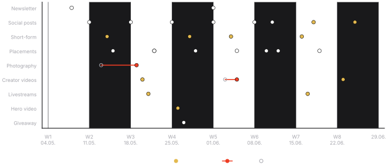
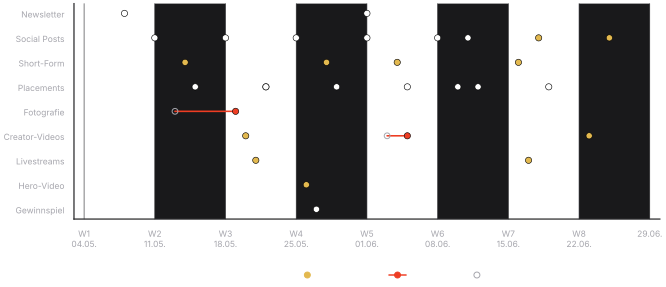
Plan dates are the internal dates agreed with AKG in week 1. Contract windows ran 5 working days beyond them.Plantermine sind die in Woche 1 mit AKG vereinbarten internen Termine. Die Vertragsfenster lagen 5 Werktage dahinter.
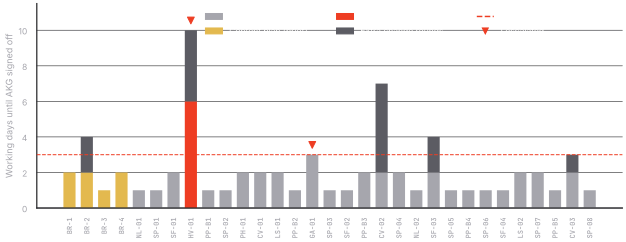
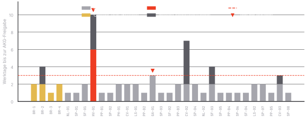
| RiskRisiko | Likelihood × damage (1–5 each)Wahrsch. × Schaden (je 1–5) | Owner | What we didWas wir getan haben | Status | Days to solveTage bis gelöst | Final outcomeErgebnis |
|---|---|---|---|---|---|---|
| R1 Delayed creative feedback on the hero videoVerzögertes Creative-Feedback zum Hero-Video | 3 × 4 = 12 | Me | Pre-booked review slots; reminder on day 3; escalated to the AKG Marketing Manager on day 4Review-Slots vorab gebucht; Erinnerung an Tag 3; an Tag 4 an den AKG Marketing Manager eskaliert | Closed: SLA breached onceGeschlossen: SLA einmal verfehlt | 6 days6 Tage | Hero video live on date; 1 approval outside SLAHero-Video pünktlich live; 1 Freigabe außerhalb des SLA |
| R2 Creator scheduling conflict (tournament travel)Terminkonflikt Creator (Turnierreise) | 3 × 3 = 9 | Creator Manager | Recorded before the trip, edit slot swapped with CV-03Vor der Reise aufgenommen, Schnitt-Slot mit CV-03 getauscht | Closed: 2-day slipGeschlossen: 2 Tage Verzug | 8 days8 Tage | Live 2 days after plan date, inside the contract window2 Tage nach Plantermin live, im Vertragsfenster |
| R3 Product shipment delay for the photo shootLieferverzug der Produkte fürs Fotoshooting | 2 × 3 = 6 | Me | Tracked the shipment daily; agreed a new shoot date with AKG in writingLieferung täglich verfolgt; neuen Shooting-Termin schriftlich mit AKG vereinbart | Closed: deadline shiftedGeschlossen: Termin verschoben | 9 days9 Tage | The one documented deadline shift (+6 days), no contractual impactDie einzige dokumentierte Terminverschiebung (+6 Tage), ohne Vertragsfolgen |
| R4 Legal approval dependency: giveaway T&CsRechtliche Freigabe: Gewinnspiel-Teilnahmebedingungen | 3 × 4 = 12 | G2 Legal Counsel | Started T&Cs two weeks early; joint call with both legal teamsAGB zwei Wochen früher begonnen; gemeinsamer Call beider Rechtsabteilungen | Closed before impactVor Eintritt geschlossen | 4 days4 Tage | Giveaway launched on date (escalated internally, within SLA)Gewinnspiel pünktlich gestartet (intern eskaliert, im SLA) |
| R5 Conflicting campaign deadlines on match weekendKollidierende Kampagnen-Deadlines am Matchwochenende | 3 × 2 = 6 | Social Media Manager | Re-sequenced the social calendar with the Social Media ManagerSocial-Kalender mit dem Social Media Manager umgeplant | Closed before impactVor Eintritt geschlossen | 2 days2 Tage | No slot lost, match-day content unaffectedKein Slot verloren, Matchday-Content unberührt |
| R6 Revision loop on creator video #2 (product claims)Revisionsschleife Creator-Video #2 (Produktclaims) | 4 × 3 = 12 | Video Producer | Claim sheet from AKG Legal; one consolidated feedback round per contractClaim-Sheet von AKG Legal; eine gebündelte Feedbackrunde laut Vertrag | Closed: 2 client roundsGeschlossen: 2 Kundenrunden | 5 days5 Tage | Approved in round 3; added to the lessons learnedIn Runde 3 freigegeben; in die Lessons Learned aufgenommen |
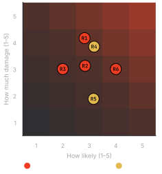
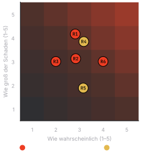
4 of 6 risks actually happened; each was solved in 7 working days on average. 5 of 6 never touched the contract; R3 caused the one deadline move, agreed with AKG in writing.4 von 6 Risiken traten ein; jedes wurde im Schnitt in 7 Werktagen gelöst. 5 von 6 berührten den Vertrag nie; R3 verursachte die einzige Terminverschiebung, schriftlich mit AKG vereinbart.
| Deliverable | PromisedZugesagt | DeliveredGeliefert | Evidence collectedGesammelte Nachweise | Last dateLetztes Datum | Location (placeholder)Ablage (Platzhalter) | Verified byVerifiziert von | Status |
|---|---|---|---|---|---|---|---|
| Creator videoCreator-Video | 3 | 3 | Live URLs, screenshots at 24 h, platform analytics exportLive-URLs, Screenshots nach 24 h, Analytics-Export | 23.06. | [G2 Drive]/AKG-2026/PoD/CV/ | Me · countersigned by AKG Brand ManagerIch · gegengezeichnet vom AKG Brand Manager | VerifiedVerifiziert |
| Social postSocial Post | 8 | 8 | Post URLs, screenshots, native insightsPost-URLs, Screenshots, native Insights | 25.06. | [G2 Drive]/AKG-2026/PoD/SP/ | Me · countersigned by AKG Brand ManagerIch · gegengezeichnet vom AKG Brand Manager | VerifiedVerifiziert |
| Short-form videoShort-Form-Video | 4 | 4 | Live URLs, screenshots, retention graphsLive-URLs, Screenshots, Retention-Kurven | 16.06. | [G2 Drive]/AKG-2026/PoD/SF/ | Me · countersigned by AKG Brand ManagerIch · gegengezeichnet vom AKG Brand Manager | VerifiedVerifiziert |
| Livestream integrationLivestream-Integration | 2 | 2 | VOD links, overlay screenshots, concurrent-viewer exportVOD-Links, Overlay-Screenshots, Export gleichzeitiger Zuschauer | 17.06. | [G2 Drive]/AKG-2026/PoD/LS/ | Me · countersigned by AKG Brand ManagerIch · gegengezeichnet vom AKG Brand Manager | Verified · export re-pulled 24.06.Verifiziert · Export 24.06. neu gezogen |
| GiveawayGewinnspiel | 1 | 1 | Approved T&Cs, entry export, draw protocolFreigegebene AGB, Teilnahme-Export, Ziehungsprotokoll | 27.05. | [G2 Drive]/AKG-2026/PoD/GA/ | Me · countersigned by AKG Brand ManagerIch · gegengezeichnet vom AKG Brand Manager | VerifiedVerifiziert |
| Hero campaign videoHero-Kampagnenvideo | 1 | 1 | Master file, live URLs, analytics exportMasterdatei, Live-URLs, Analytics-Export | 26.05. | [G2 Drive]/AKG-2026/PoD/HV/ | Me · countersigned by AKG Brand ManagerIch · gegengezeichnet vom AKG Brand Manager | VerifiedVerifiziert |
| Product photography packageProduktfoto-Paket | 1 | 1 | Delivery receipt, usage logLieferschein, Nutzungsprotokoll | 19.05. | [G2 Drive]/AKG-2026/PoD/PH/ | Me · countersigned by AKG Brand ManagerIch · gegengezeichnet vom AKG Brand Manager | VerifiedVerifiziert |
| Newsletter integrationNewsletter-Integration | 2 | 2 | Send report, rendered screenshotVersandreport, Screenshot der Ausgabe | 01.06. | [G2 Drive]/AKG-2026/PoD/NL/ | Me · countersigned by AKG Brand ManagerIch · gegengezeichnet vom AKG Brand Manager | VerifiedVerifiziert |
| Product placementProduktplatzierung | 9 | 9 | Timestamped clips, screenshotsClips mit Zeitmarken, Screenshots | 19.06. | [G2 Drive]/AKG-2026/PoD/PP/ | Me · countersigned by AKG Brand ManagerIch · gegengezeichnet vom AKG Brand Manager | VerifiedVerifiziert |
| TotalGesamt | 31 | 31 | 73 evidence items73 Nachweise | 25.06. | – | – | 100% coverage100 % Abdeckung |
Creator-led video wins: move weeks 7–8Creator-Video gewinnt: Wochen 7–8 umschichten.
| Format (weeks 1–5)Format (Wochen 1–5) | PiecesAnzahl | People reachedErreichte Personen | Video viewsVideo-Views | Interactions per 100 impressionsInteraktionen pro 100 Impressionen | Clicks per 100 impressionsKlicks pro 100 Impressionen | Watched to the endBis zum Ende gesehen | Site actions per 100 peopleWebsite-Aktionen pro 100 Personen |
|---|---|---|---|---|---|---|---|
| Creator videoCreator-Video | 2 | 129K129 Tsd. | 323K323 Tsd. | 6.0%6,0 % | 1.55%1,55 % | 43%43 % | 1.45%1,45 % |
| Short-form videoShort-Form-Video | 3 | 190K190 Tsd. | 533K533 Tsd. | 5.5%5,5 % | 1.18%1,18 % | 70%70 % | 1.09%1,09 % |
| Livestream | 1 | 45K45 Tsd. | 89K89 Tsd. | 5.8%5,8 % | 1.22%1,22 % | 53%53 % | 1.04%1,04 % |
| Hero videoHero-Video | 1 | 275K275 Tsd. | 578K578 Tsd. | 5.0%5,0 % | 0.79%0,79 % | 54%54 % | 0.68%0,68 % |
| Static social postStatischer Social Post | 4 | 130K130 Tsd. | – | 2.5%2,5 % | 0.60%0,60 % | – | 0.54%0,54 % |
| Photo packageFotopaket | 1 | 95K95 Tsd. | – | 2.9%2,9 % | 0.55%0,55 % | – | 0.45%0,45 % |
| Product placementProduktplatzierung | 6 | 119K119 Tsd. | – | 2.0%2,0 % | 0.41%0,41 % | – | 0.37%0,37 % |
| Newsletter | 2 | 15K15 Tsd. | – | 4.9%4,9 % | 4.30%4,30 % | – | 3.70%3,70 % |
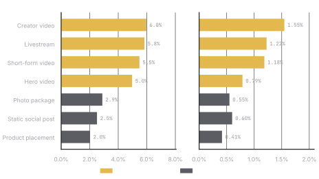
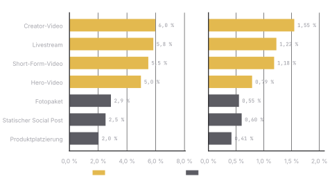
Site actions = tracked sign-ups and product-page visits on the AKG landing page. The newsletter row counts email opens, so it is not comparable with social formats.Website-Aktionen = getrackte Anmeldungen und Produktseitenbesuche auf der AKG-Landingpage. Die Newsletter-Zeile zählt E-Mail-Öffnungen und ist nicht mit Social-Formaten vergleichbar.
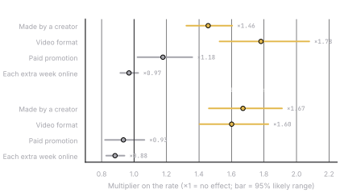
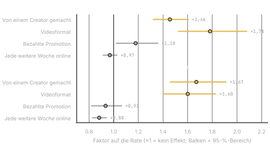
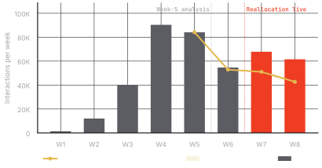
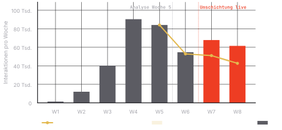
Made by a creator: ×1.46 interactions and ×1.67 odds of a click. Video: ×1.78 and ×1.60. Always compared like for like: same reach, same paid promotion, same weeks online. The forecast range comes from re-running the model 400 times on resampled data.Von einem Creator gemacht: ×1,46 Interaktionen und ×1,67 Klick-Chance. Video: ×1,78 und ×1,60. Immer fair verglichen: gleiche Reichweite, gleiche bezahlte Promotion, gleich lange online. Der Prognosebereich stammt aus 400 Neuberechnungen auf neu gezogenen Daten.
The operational decisionDie operative Entscheidung
- Weeks 1–5 by format: creator videos got 6.0 interactions and 1.55 clicks per 100 impressions; static posts only 2.5 and 0.60.Wochen 1–5 nach Format: Creator-Videos bekamen 6,0 Interaktionen und 1,55 Klicks pro 100 Impressionen; statische Posts nur 2,5 und 0,60.
- The models showed the gap stays when you compare like for like (same reach, paid promotion and weeks online), so it was not just bigger audiences.Die Modelle zeigten: Der Abstand bleibt auch im fairen Vergleich (gleiche Reichweite, Promotion und Zeit online) – es lag also nicht nur an größeren Audiences.
- Proposal to my line manager, then AKG (05.06.): run SP-07/08 as creator-led video posts, move paid support from static posts to LS-02, SF-04, CV-03. Same deliverable count, no extra cost.Vorschlag an meinen Vorgesetzten, dann an AKG (05.06.): SP-07/08 als Creator-Video-Posts, Paid Support von statischen Posts auf LS-02, SF-04, CV-03. Gleiche Deliverable-Anzahl, keine Mehrkosten.
- AKG approved on 09.06. I re-briefed Creator D and updated the tracker and the contract annex (format change note).AKG gab am 09.06. frei. Ich habe Creator D neu gebrieft und Tracker sowie Vertragsanhang (Change Note) aktualisiert.
| Weeks 7–8Wochen 7–8 | Forecast (original plan)Prognose (ursprünglicher Plan) | ActualIst | ChangeVeränderung |
|---|---|---|---|
| InteractionsInteraktionen | 93,71993.719 | 129,333129.333 | +38%+38 % |
| Clicks to AKGKlicks zu AKG | 19,41219.412 | 27,37127.371 | +41%+41 % |
| Additional people reachedZusätzlich erreichte Personen | 340,804340.804 | 415,781415.781 | +22%+22 % |
| Videos watched to the endVideos bis zum Ende gesehen | 55%55 % | 70%70 % | +27%+27 % (+15 pts) (+15 Pkt.) |
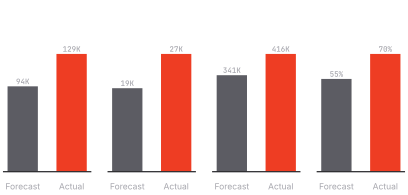
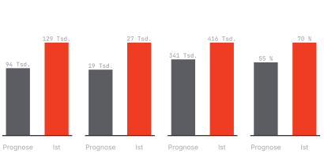
The actual result is far above the forecast’s likely range (91K–96K interactions, 80%). There was no control group, so this is a strong signal, not proof.Das Ist-Ergebnis liegt weit über dem wahrscheinlichen Bereich der Prognose (91 Tsd.–96 Tsd. Interaktionen, 80 %). Ohne Kontrollgruppe ist das ein starkes Signal, kein Beweis.
Creator-led video as the core formatCreator-Video als Kernformat
EvidenceEvidenz: A creator-led video post gets ×2.59 the interactions of a static post (likely range ×2.32–×2.90). Had the 6 static post slots run that way: about +44K interactions (36K–52K).Ein Creator-Video-Post bekommt ×2,59 die Interaktionen eines statischen Posts (wahrscheinlich ×2,32–×2,90). Wären die 6 statischen Slots so gelaufen: rund +44 Tsd. Interaktionen (36 Tsd.–52 Tsd.).
To discussZu besprechen: A higher creator/video share, tested against a control group.Ein höherer Creator/Video-Anteil, getestet gegen eine Kontrollgruppe.
Livestream segments as a seriesLivestream-Segmente als Serie
EvidenceEvidenz: Livestreams: 5.8 interactions per 100 impressions in weeks 1–5, 6.6 in weeks 7–8, and 63% watched to the end.Livestreams: 5,8 Interaktionen pro 100 Impressionen in Wochen 1–5, 6,6 in Wochen 7–8, und 63 % bis zum Ende gesehen.
To discussZu besprechen: A recurring monthly segment instead of two one-offs.Ein wiederkehrendes Monatsformat statt zwei Einzeltermine.
Consent-based audience from the giveawayEinwilligungsbasierte Audience aus dem Gewinnspiel
EvidenceEvidenz: 18,400 entries in 15 days; 4.3% of newsletter opens led to a click.18.400 Teilnahmen in 15 Tagen; 4,3 % der Newsletter-Öffnungen führten zu einem Klick.
To discussZu besprechen: An opt-in for AKG product news, checked with both legal teams.Ein Opt-in für AKG-Produktnews, mit beiden Rechtsabteilungen geprüft.
Fewer, better-integrated placementsWeniger, besser integrierte Placements
EvidenceEvidenz: Placements did worst: 2.0 interactions and 0.41 clicks per 100 impressions.Placements schnitten am schwächsten ab: 2,0 Interaktionen und 0,41 Klicks pro 100 Impressionen.
To discussZu besprechen: Fewer, story-led placements, measured by brand lift rather than clicks.Weniger, storybasierte Placements, gemessen per Brand Lift statt Klicks.
Measurement beyond clicksMessung über Klicks hinaus
EvidenceEvidenz: Only 18K tracked actions on the AKG site; no sales data and no survey of brand perception.Nur 18 Tsd. getrackte Aktionen auf der AKG-Seite; keine Verkaufsdaten und keine Umfrage zur Markenwahrnehmung.
To discussZu besprechen: Agree a brand-lift study and retailer tracking before launch.Brand-Lift-Studie und Händler-Tracking vor dem Start vereinbaren.
Framed as questions for the review with AKG, not as a pitch. Projections come from 8 weeks of hypothetical data and are indicative only.Als Fragen fürs Review mit AKG formuliert, nicht als Pitch. Projektionen beruhen auf 8 Wochen hypothetischer Daten und sind nur ein Richtwert.
Generated by tools/akg/build.py (pandas, statsmodels, matplotlib, seaborn). The build checks every total against the brief before it writes a file.Erzeugt von tools/akg/build.py (pandas, statsmodels, matplotlib, seaborn). Der Build prüft jede Summe gegen das Briefing, bevor er eine Datei schreibt.